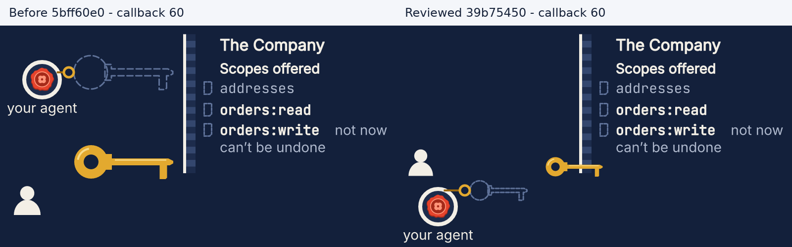

Product repair · 01
The recipient stays put through a grant.
Look for: the person, agent and ring. The earlier composition removes/repositions the recipient; the reviewed one keeps it in place while the grant arrives.
Historical 5bff60e0 → reviewed 39b75450. Same direct collect event and starting model, after the accepted ask → approve-read → trick history. Still: callback 60, +2 s.



Play the complete grant event · 135 callbacks · 4.5 s
Pause near +1.70 s (callback 51): the old recipient field is empty; the reviewed person, agent and ring remain visible. Download MP4 · 30 fps, every recorded callback once, no speed adjustment. Native boundary bookkeeping is included; the authored event mark is 4.45 s. Both sides have the same accepted history and model.